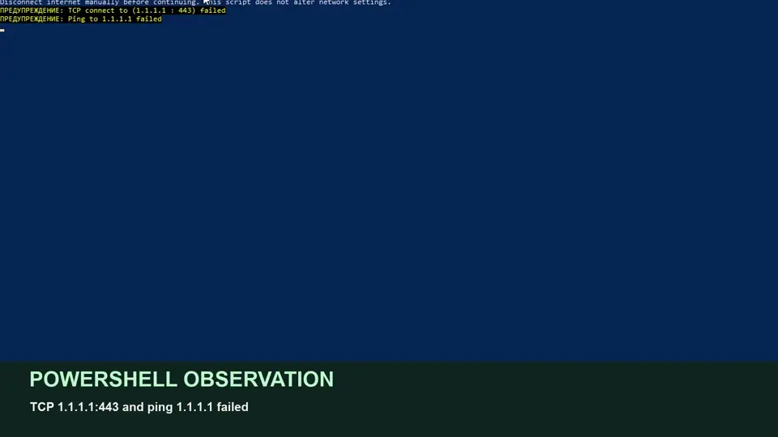

Open the project
Use Node.js 22 or newer. Clone the repository and enter its root.
git clone https://github.com/chapaevv123/pocketify-qvac.git
Set-Location .\pocketify-qvacA reproducible local experiment using the official QVAC SDK. Follow the checks in order and keep the receipt's actual PASS, FAIL or INCONCLUSIVE verdict. The historical Studio receipts show INCONCLUSIVE. A supplementary PowerShell recording shows two failed checks to 1.1.1.1 and a local QVAC inference; it does not capture Windows adapter state or an online baseline.
Run these commands in a regular Windows PowerShell window from the cloned repository. No administrator rights or network-setting scripts are required.
Use Node.js 22 or newer. Clone the repository and enter its root.
git clone https://github.com/chapaevv123/pocketify-qvac.git
Set-Location .\pocketify-qvacThe setup script uses npm.cmd ci only when the SDK is absent, and writes a project-local QVAC config.
powershell.exe -NoProfile -ExecutionPolicy Bypass -File .\scripts\setup.ps1While online, cache the official QWEN3_600M_INST_Q4 GGUF. Weights stay outside Git and Render.
node .\qvac-gate.mjsKeep this terminal open. In a browser, visit http://127.0.0.1:4317.
powershell.exe -NoProfile -ExecutionPolicy Bypass -File .\scripts\start-studio.ps1Click Start Offline Challenge. Studio checks the cache, samples selected external routes and runs genuine warm-up inference. If no external route is observed reachable before disconnecting, a later PASS is unavailable.
Turn Wi-Fi off in the Windows network menu or unplug Ethernet. Leave the localhost page open. Capture the actual adapter state in a new recording if claiming physical disconnection.
Check the manual-disconnect box and click Verify & Infer. Node probes DNS, TCP, HTTPS and ICMP. Raw outcomes appear in the UI and receipt.
The local QVAC worker classifies the entered ticket and records the actual category, summary and inference duration. This is separate from recorded playback on Render.
Save the JSON receipt. Show its ID, UTC timestamp, before/after checks, input, output and final verdict. Compare the historical INCONCLUSIVE receipts.
Use the same Windows controls to restore connectivity. Pocketify never changes adapters, firewall, registry, boot settings or security configuration.


The same uncut terminal source later shows local QVAC inference in 180 ms, returning feature for a CSV export crash ticket; benchmark truth is bug. The video lacks a reachable pre-disconnect baseline and visible adapter state. The two historical Studio receipts remain INCONCLUSIVE.
Observed failed probes are bounded network observations. ECONNREFUSED on DNS is ambiguous, and a failed request alone does not prove physical disconnection. The supplied footage does not show the Windows adapter state.